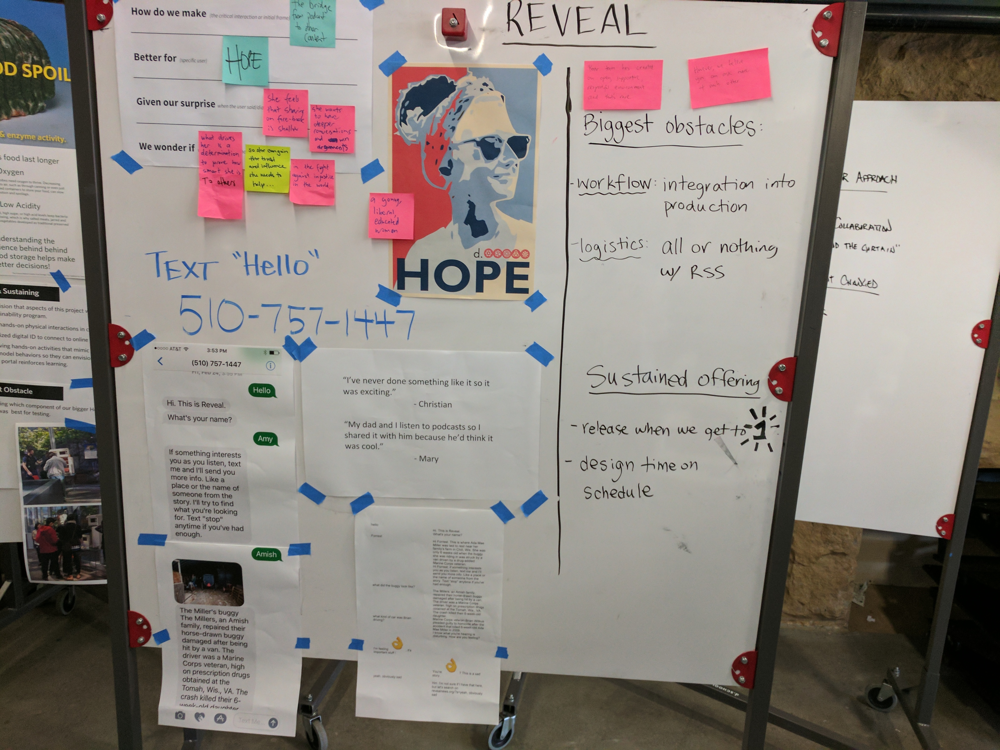
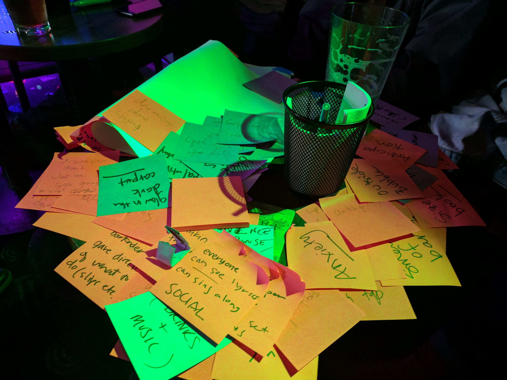
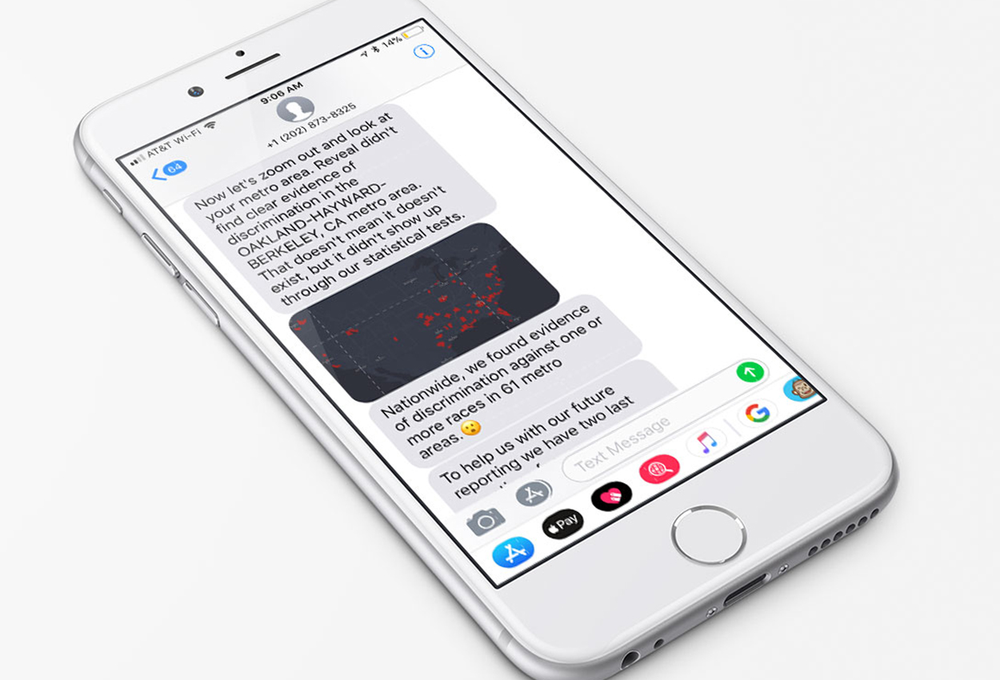

Amplify is an SMS engagement platform I launched at Reveal. The product connects podcast listeners to deeper content, the people behind the show, and offers opportunities for conversion. Listeners text keywords to a dedicated phone number. We then send them relevant photos, data, and other interactive content, right to their devices.

Through audience interviews, I met ‘Hope’ who became a key persona in the design process. Hope, and people like her, often do their own research into stories that interest them. This led to the insight that Reveal had exclusive content that we could use as the hook for deeper interactions.

The early prototypes I built showed our listeners were hungry for an intimate connection to the show creators. The first campaign opened with Reveal’s host sending a selfie to users. To our delight, people sent us their own selfies in response - unsolicited. This behavior focused us on the intimacy of the platform, and I looked for ways to leverage that intimacy to extend the engagement as much as possible. One key tactic was keeping the writing style extremely brief and informal. Emojis were a great tool in the arsenal.

Later campaigns moved beyond sending static content, asking users to answer multi-step questions, and connecting the experience to databases supporting more complex interactions. This campaign ran with a story on modern-day redlining. Users can text any street address in the U.S., and we tell them if our analysis found evidence of lending discrimination based on race. The campaign also prompts users to share their experiences with us, resulting in thousands of user story submissions.
Amplify has become our highest converting engagement platform. Over 15K users have used the platform, and we’ve sent over 140K messages sent since in the last year. Amplify received the Edgar R. Murrow award for Excellence in Innovation.